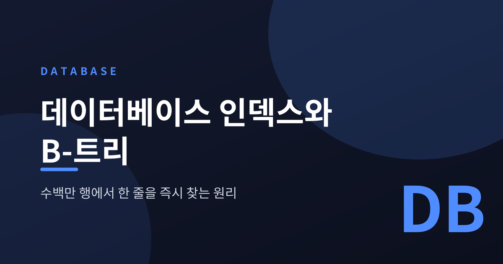
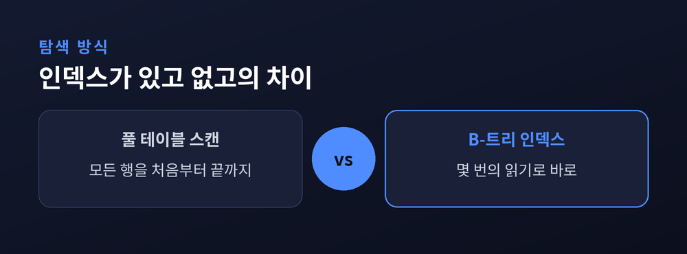
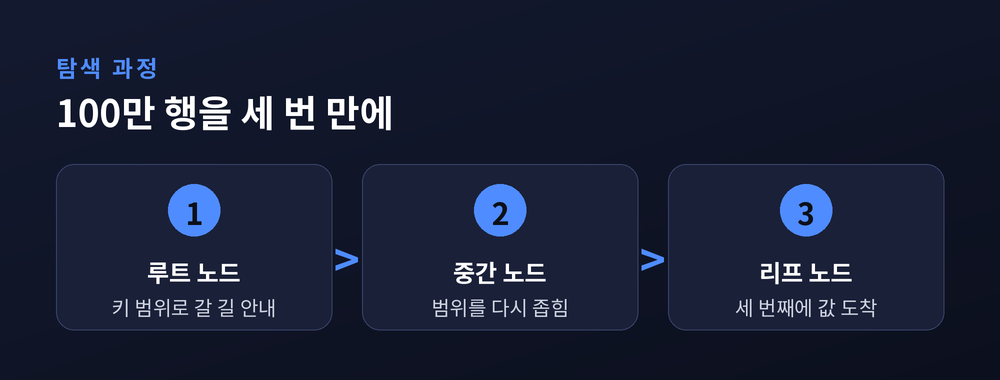
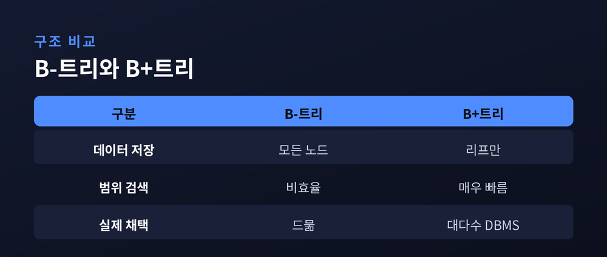
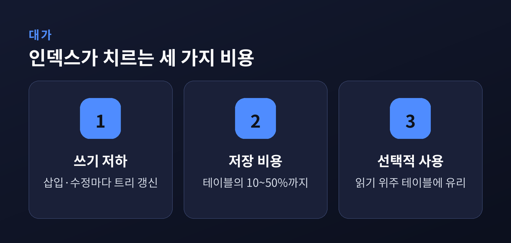

데이터베이스 인덱스와 B-트리, 수백만 행에서 한 줄을 즉시 찾는 원리
이번 글에서는 데이터베이스 인덱스가 어떻게 수백만 개의 행 가운데 원하는 한 줄을 순식간에 찾아내는지 정리해 보겠습니다. 그 심장에는 B-트리라는 자료구조가 있습니다. 이름은 낯설지만 원리는 의외로 단정합니다.

인덱스가 없으면 무슨 일이 벌어지는가
먼저 인덱스가 없는 상태를 떠올려 보겠습니다.
데이터베이스는 원하는 행을 찾기 위해 테이블을 처음부터 끝까지 한 줄씩 훑습니다. 이것을 풀 테이블 스캔이라고 부릅니다. 조건에 맞든 맞지 않든 모든 행을 확인하므로, 비용은 전체 행 수에 그대로 비례합니다.
행이 백만 개라면 최악의 경우 백만 번을 들여다봐야 합니다. 데이터가 커질수록 검색은 정직하게 느려집니다.
책 한 권에서 특정 단어를 찾는다고 해보겠습니다. 색인 없이 1쪽부터 넘기는 방식이 바로 풀 스캔입니다. 반대로 책 뒤의 '찾아보기'를 펼치는 것이 인덱스입니다. 데이터베이스 인덱스도 똑같은 발상에서 출발합니다.
B-트리, 얕고 넓은 나무
인덱스의 핵심에는 B-트리가 있습니다.
B-트리는 스스로 균형을 맞추는 트리 자료구조입니다. 흔히 아는 이진 탐색 트리를 일반화해, 한 노드가 자식을 둘이 아니라 수십, 수백 개까지 거느릴 수 있게 만든 것입니다. 각 노드 안의 키는 항상 오름차순으로 정렬되어 있습니다.
탐색은 뿌리(루트)에서 시작합니다. 각 중간 노드는 "이 키 범위는 저쪽 자식으로" 하고 길을 안내하는 이정표 역할을 합니다. 그렇게 한 층씩 내려가다 마지막 잎(리프)에 도착하면 원하는 값, 혹은 값의 위치를 얻습니다.
이 과정의 비용은 O(log n)입니다. 데이터가 열 배 늘어도 탐색 횟수는 몇 단계밖에 늘지 않습니다.

디스크 페이지에 맞춘 영리한 설계
B-트리가 특별한 이유는 하드웨어를 정확히 겨냥했기 때문입니다.
디스크는 데이터를 한 바이트씩 읽지 않습니다. 보통 4KB 정도의 고정 크기 블록, 즉 페이지 단위로 읽고 씁니다. B-트리는 이 점을 노렸습니다. 노드 하나의 크기를 디스크 페이지 하나에 딱 맞춥니다.
그러면 '노드 하나를 읽는 일'이 곧 '디스크를 한 번 읽는 일'이 됩니다. 한 번의 값비싼 디스크 접근으로 최대한 많은 키를 한꺼번에 손에 넣는 셈입니다.
여기서 팬아웃이라는 말이 등장합니다. 노드 하나가 거느리는 자식의 수를 뜻합니다. 팬아웃이 클수록 나무는 옆으로 넓어지고 위로는 낮아집니다. 나무가 낮다는 것은 뿌리에서 잎까지 거치는 층이 적다는 뜻이고, 그만큼 디스크 접근도 줄어듭니다.
수백만 행을 세 번 만에 찾는 계산
말보다 숫자가 분명합니다.
팬아웃이 100이고 데이터가 100만 건이라고 해보겠습니다. 100 곱하기 100 곱하기 100이 곧 100만입니다. 즉 이 나무의 높이는 단 3입니다.
뿌리에서 한 번, 중간에서 한 번, 잎에서 한 번. 어떤 레코드든 대략 세 번의 디스크 읽기로 찾아냅니다.
풀 스캔이었다면 최악 100만 번을 읽어야 했습니다. 그 100만 번이 세 번으로 줄어듭니다. '즉시 찾는다'는 표현이 과장이 아닌 이유가 여기에 있습니다.

B-트리와 B+트리, 실제로 쓰이는 쪽
교과서는 B-트리를 말하지만, 실제 데이터베이스가 쓰는 것은 대개 그 변형인 B+트리입니다.
차이는 값을 어디에 두느냐에 있습니다. 원조 B-트리는 모든 노드에 키와 값을 함께 담습니다. B+트리는 실제 데이터를 잎 노드에만 모아두고, 중간 노드에는 길을 안내할 키와 포인터만 남깁니다.
이렇게 하면 중간 노드가 가벼워집니다. 노드 하나에 더 많은 키를 넣을 수 있고, 그만큼 나무의 층이 더 줄어듭니다.
또 하나, B+트리의 잎 노드들은 서로 손을 잡고 있습니다. 각 잎이 옆 잎을 가리키는 연결선을 갖습니다. 덕분에 "3월부터 6월까지" 같은 범위 검색에서 중간 노드로 되돌아갈 필요 없이 잎을 따라 쭉 훑고 지나갈 수 있습니다. 이 구조적 이점 때문에 대다수 관계형 데이터베이스가 인덱스에 B+트리를 채택합니다.

MySQL은 실제로 어떻게 동작하는가
추상적인 이야기를 실제 제품으로 내려보겠습니다. MySQL의 InnoDB 엔진이 좋은 예입니다.
InnoDB의 모든 테이블은 클러스터형 인덱스를 딱 하나 가지며, 그것은 언제나 기본 키입니다. 이 인덱스의 잎 노드에는 그 행의 모든 컬럼 데이터가 통째로 들어 있습니다. 그래서 기본 키로 행을 찾으면 트리를 한 번만 타고 내려가면 끝납니다.
보조 인덱스는 조금 다릅니다. 잎 노드에 실제 데이터 대신 기본 키 값을 담아둡니다. 그래서 보조 인덱스로 검색하면 두 번 일합니다. 먼저 보조 인덱스에서 기본 키를 찾고, 그 키로 다시 클러스터형 인덱스를 뒤져 진짜 행을 가져옵니다.
원리를 알면 왜 어떤 조회는 빠르고 어떤 조회는 한 박자 느린지 짐작할 수 있습니다.
공짜가 아닌 속도, 인덱스의 대가
여기까지만 보면 인덱스는 만능처럼 보입니다. 그러나 세상에 공짜는 없습니다.

인덱스는 읽기를 빠르게 하는 대신 쓰기를 느리게 하고, 저장 공간을 더 씁니다. 인덱스가 걸린 값을 바꿀 때마다 데이터베이스는 B-트리 구조까지 함께 손봐야 하기 때문입니다. 삽입은 정렬을 유지하려 나무를 다시 균형 잡고, 수정은 옛 항목을 지우고 새 항목을 넣습니다.
한 테이블에 인덱스가 다섯 개라면, 행 하나를 넣을 때 인덱스 쓰기도 다섯 번 따라붙습니다. 100만 행을 한꺼번에 넣는 작업이라면 1분이면 될 일이 10분으로 늘 수도 있습니다. 저장 공간도 만만치 않아, 큰 테이블에서는 인덱스 하나가 테이블 크기의 10~50%를 차지하기도 합니다.
그래서 인덱스는 '많을수록 좋은 것'이 아닙니다. 읽기가 잦은 곳에는 넉넉히, 쓰기가 폭주하는 로그성 테이블에는 아껴 씁니다. 인덱스를 더한다는 것은 결국 "읽기 이득이 쓰기 손해보다 클 것"이라는 하나의 베팅인 셈입니다.
한 가지 더 있습니다. 인덱스가 있다고 데이터베이스가 늘 그것을 쓰는 것도 아닙니다.
조건에 걸리는 행이 너무 많으면 이야기가 달라집니다. 대략 전체의 5%를 넘게 골라야 하는 질의라면, 옵티마이저는 오히려 풀 스캔을 택하기도 합니다. 잎을 하나씩 임의로 건너뛰며 읽는 인덱스 접근보다, 페이지를 한꺼번에 쓸어 담는 순차 읽기가 그럴 땐 더 빠르기 때문입니다. 순차 입출력은 원래 가장 빠른 읽기 방식입니다.
예전엔 "인덱스만 걸면 무조건 빨라진다"고 여겼습니다. 지금은 "얼마나 좁게 고르는 질의인가"를 함께 봅니다. 같은 인덱스라도 어떻게 쓰이느냐에 따라 약이 되기도, 군더더기가 되기도 합니다.
정리하면 이렇습니다.
인덱스는 데이터를 미리 정렬해 둔 '찾아보기'이고, 그 뼈대는 디스크에 맞춰 얕고 넓게 자란 B-트리입니다. 덕분에 수백만 행도 몇 번의 읽기로 좁혀집니다. 다만 그 빠름은 쓰기 속도와 공간을 내준 대가로 얻은 것입니다.
"인덱스는 공짜 속도가 아니라, 잘 고른 거래다."
어떤 열에 인덱스를 걸지 고민되신다면, 그 테이블이 주로 읽히는 곳인지 쓰이는 곳인지부터 헤아려 보시길 권합니다.